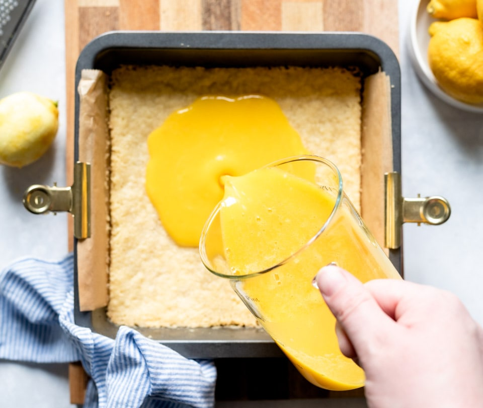
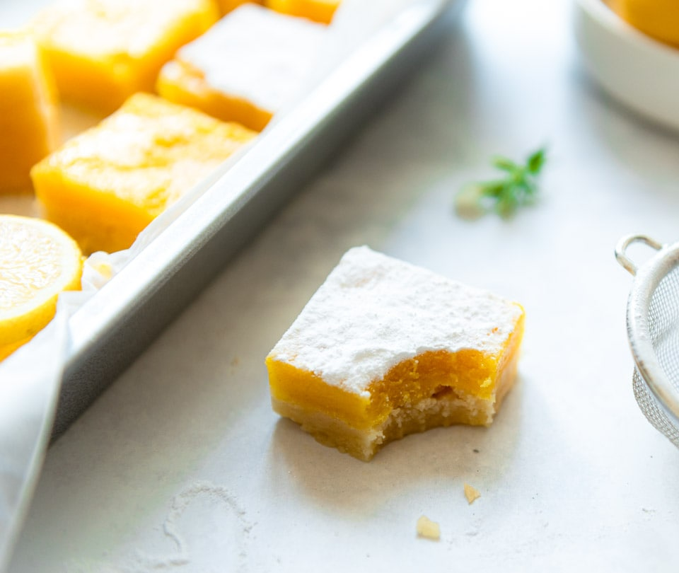

Pas het aantal stukken aan; de hoeveelheden hieronder worden automatisch herberekend.
Bodem
Ingrediënten
- 200 g boter, op kamertemperatuur en in blokjes
- 100 g witte basterdsuiker
Bereiding
- Mix de boter en basterdsuiker in een keukenmachine tot een licht en romig mengsel.
- Voeg 300 g bloem toe en mix tot er een deeg ontstaat.
- Meng het deeg met de hand verder tot het samenkomt in grotere stukken.
- Bekleed een vierkant bakblik met bakpapier. Verdeel het deeg gelijkmatig over de bodem, druk het stevig aan en werk de randen strak af.
- Bak de bodem 20 minuten in een heteluchtoven op 160 °C.
Citroenlaag
Ingrediënten
- 375 g witte basterdsuiker
- 50 g bloem, gezeefd
- 225 g citroensap
- 6 eieren, losgeklopt
Bereiding
- Meng de basterdsuiker met de gezeefde bloem.
- Voeg het citroensap toe en meng goed.
- Voeg de losgeklopte eieren toe en meng tot een glad geheel.
- Giet het citroenmengsel over de gebakken bodem.
- Bak nog 15 minuten in de oven.
- Laat afkoelen en bestrooi met poedersuiker.

